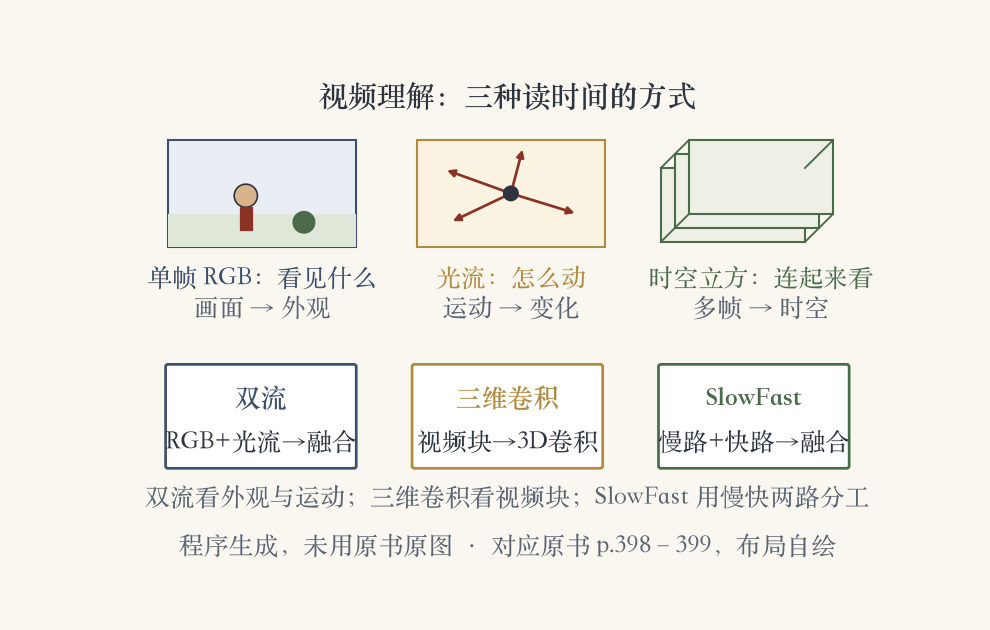
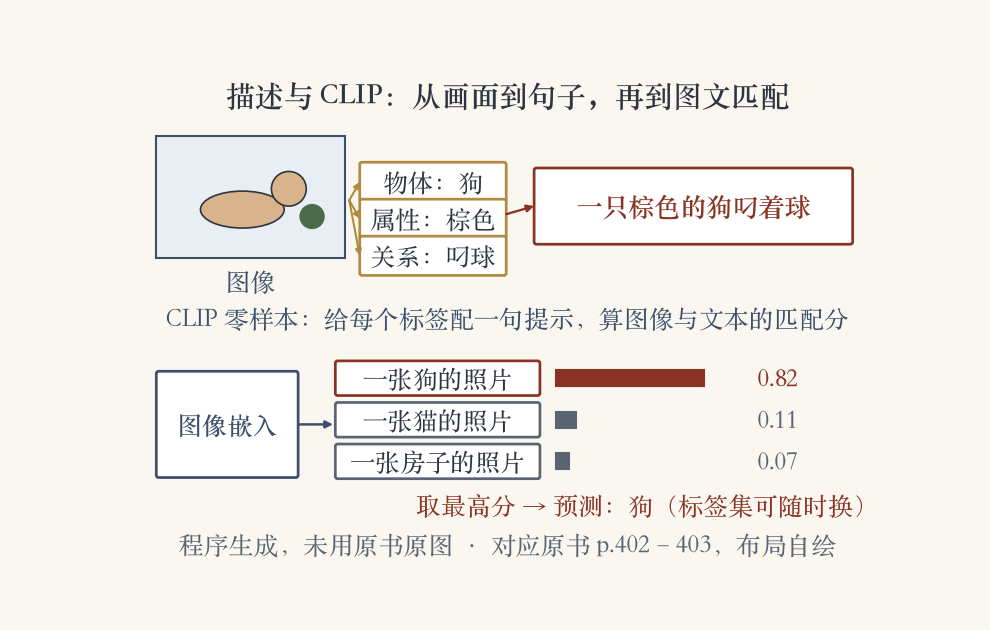
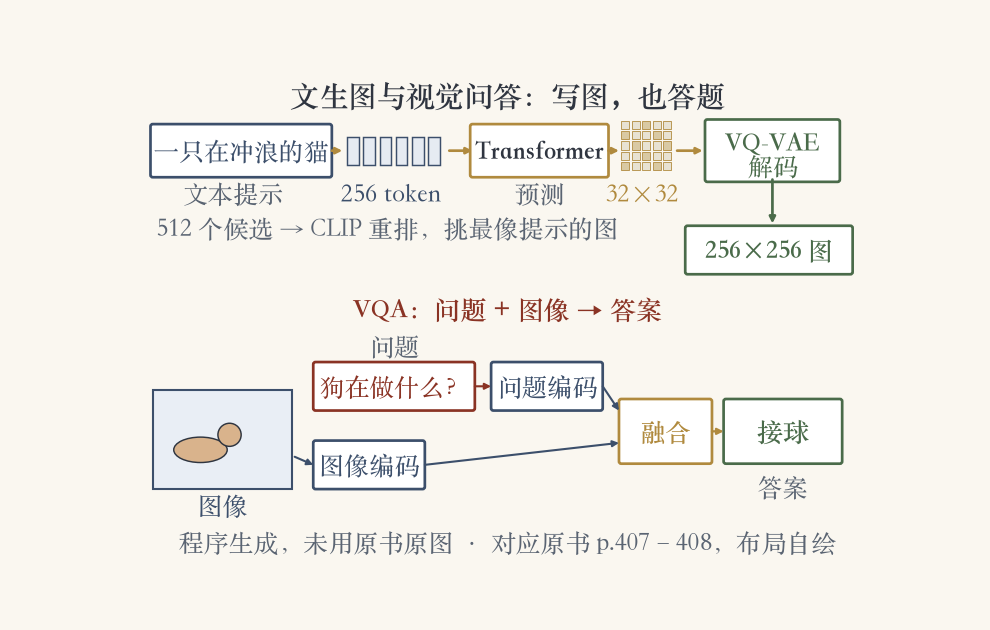

开场 · 从单图到时间轴
单张图之后，进入时间轴
上一集分好像素，这一集读时间。
动作是视频的基本原子单位。
两条线：动作识别与视频分类；视觉与语言。
任务：描述画面、看图问答、文生图。
依据：原书第 396 页
本集两条线
动作识别：从手工特征到深度网络
视觉与语言：描述、问答、文生图
两条线都在读时间里的变化
正课第五十五集
01 / 17
动作识别 · 早期路线
从点到网格，再到时空特征
1990 年代起步，合称人体运动分析。
早期：点和网格跟踪，时空签名。
2000 年代：小块光流、时空特征检测器。
数据集：KTH、UCF sports、Hollywood、UCF-101、HMDB。
依据：原书第 397 页
深度学习之前
手工设计：什么变化像什么动作
再拿数据集比高低
换场景往往要重新设计特征
正课第五十五集
02 / 17
动作识别 · 双流与三维卷积
画面一路，运动一路
图 6.44：双流、替代架构、SlowFast。
三维卷积直接作用在视频像素上。
双流：RGB 看外观，光流看运动。
Carreira 与 Zisserman 比较过三种方案。
依据：原书第 398–399 页

视频理解三视角：单帧、光流、三维时空立方；双流、三维卷积与 SlowFast｜程序生成，未用教材或论文原图
正课第五十五集
03 / 17
动作识别 · 时间尺度
慢路判断，快路抓动作
最新架构回到原始像素做三维卷积。
长时特征库：给更宽的时间上下文。
SlowFast：慢路低帧率，快路高帧率。
快路通道更少，两路特征再融合。
依据：原书第 399 页
SlowFast 分工
慢路：隔几秒看一眼，判断在干什么
快路：连拍，抓手怎么挥
两路分工更省也更准
正课第五十五集
04 / 17
动作识别 · 数据集
从几十段到百万级
表 6.3：Charades、YouTube8M、Kinetics 等。
Charades 9.8k 段；YouTube8M 8M 段。
Kinetics 700 类 / 65 万段。
AVA 430 段标 80 个动作；EPIC-KITCHENS 100 小时。
依据：原书第 399–400 页
表 6.3 规模
Kinetics：700 类、65 万段
Something-something：174 动作、22 万段
AVA：430 段、80 个动作
正课第五十五集
05 / 17
动作识别 · 自监督与音频
声音是免费的标签
视频理解也开始用自监督训练。
音轨：免费、不用人工标注的信号。
推理时有声音，准确率还能再提一点。
动态场景识别：海滩、烟花、下雪。
依据：原书第 399 页
多模态信号
画面：人在做什么
声音：发生了什么
动态场景用时空 CNN
正课第五十五集
06 / 17
视觉与语言 · 从 AGI 到 BabyTalk
从看见到说出
视觉研究的终极目标：接入通用人工智能。
视觉要接语音、语言、逻辑和常识。
语音助手普及后，下一步是视觉加 NLP。
BabyTalk：物体、属性、位置 → 兼容标签 → 描述。
依据：原书第 400 页
BabyTalk 三步
检测物体、属性、位置关系
推断一套彼此兼容的标签
生成图像描述
正课第五十五集
07 / 17
视觉与语言 · 图像描述
每个词都要找到画面
描述论文爆发，CNN 部件接 RNN/LSTM。
多示例学习、最大熵语言模型、视觉注意力。
近邻图加描述投票，效果意外地好。
图 6.46：每个词对齐一块图像区域。
依据：原书第 402 页
描述管线
检测物体与人体动作
循环网络生成句子
注意力把词落到区域
正课第五十五集
08 / 17
视觉与语言 · CLIP 零样本
把分类变成图文匹配
图像分类只能从固定标签集里选。
CLIP：用描述做零样本迁移，标签可换。
四亿对图文，对比学习判断配不配。
零样本超过各自微调的 ResNet-50。
依据：原书第 403 页

图像描述流水线与 CLIP：图像→物体/属性/关系→描述句子；CLIP 零样本取最高分｜程序生成，未用教材或论文原图
正课第五十五集
09 / 17
视觉与语言 · CLIP 的软肋
它读的是图上的字
内部单元对同一概念的不同模态反应相近。
对抗排版攻击：苹果贴 iPod，答成 iPod。
图 6.47：按标签回答，不看场景。
会用文字线索，但没摸过真实物体。
依据：原书第 403 页
现象
蜘蛛侠图、单词蜘蛛、简笔画
触发相近的内部单元
一张便利贴就能带偏
正课第五十五集
10 / 17
视觉与语言 · 图文数据集
一句描述配整图，还是一小块
Conceptual、Pascal、SBU、Flickr30k、COCO。
Flickr30k 与 COCO 扩到每图 50 句。
Visual Genome：子区域短语，密集描述。
YFCC100M 约 1 亿图，只带原始元数据。
依据：原书第 403–405 页
表 6.4 规模
Flickr30k：3 万图带框
COCO：150 万句、33 万图
Conceptual Captions：330 万对
正课第五十五集
11 / 17
视觉与语言 · 描述指标
字面与语义两把尺
BLEU：双语评估替补。
ROUGE：面向召回的要点评估。
METEOR 看词序；CIDEr 看共识。
SPICE：比较语义命题。
依据：原书第 405–406 页
五个指标
BLEU / ROUGE：词与片段重合
METEOR：同义词与词序
CIDEr：多份参考投票
SPICE：谁、做什么、在哪
正课第五十五集
12 / 17
视觉与语言 · 文生图与 DALL·E
把一句提示画成图
文生图是图像描述的反问题。
早期 RNN 很糊；GAN 只有 64×64。
后来先出小图，再条件放大。
DALL·E：2.5 亿图文对，512 候选用 CLIP 重排。
依据：原书第 406–407 页
DALL·E 两段
VQ-VAE-2：图像变 token
Decoder Transformer：预测 token
32×32 网格 → 256×256 图
正课第五十五集
13 / 17
视觉与语言 · 补全与视觉问答
会描述还不够，还要会答
DALL·E 补全：保留部分 token，猜剩下的。
文本加半张图，可做图像到图像。
会描述不等于理解场景。
VQA：指着图提问，从 2015 年起升温。
依据：原书第 407–408 页

文生图两段式与视觉问答：文本 token→图像 token→解码；VQA 问题编码+图像特征→答案｜程序生成，未用教材或论文原图
正课第五十五集
14 / 17
视觉与语言 · VQA 数据集
逼模型真看图像
VQA v2.0：平衡图像对，同题不同答。
降低先验假设，答案要扎根图像。
VCR：视觉常识推理。
GQA：2200 万问题，考组合推理。
依据：原书第 408 页
数据设计
同一问题，两张图答案不同
答案必须看图才能给
表 6.4 汇总规模
正课第五十五集
15 / 17
视觉与语言 · VQA 方法
先读懂问题，再看对地方
注意力把像素区域和语义概念连起来。
问题编码与图像嵌入融合，直接出答案。
粗网格与自底向上检测器来回摆。
最近两个最好的算法回到网格特征。
依据：原书第 408 页
融合分支
双线性池化、对齐、关系推理
神经模块网络
鲁棒 VQA、多模态预训练
正课第五十五集
16 / 17
收束 · 下一集习题课
动作原子到会答的机器
动作是视频的原子，三种架构读时间。
描述、CLIP、DALL·E 连接画面与语言。
VQA 与对话要求机器会答。
下一集：识别章习题课。
依据：原书第 396–409 页
本集三段
读时间：双流 / 3D 卷积 / SlowFast
连语言：描述 / CLIP / DALL·E
会回答：VQA / 视觉对话
正课第五十五集
17 / 17